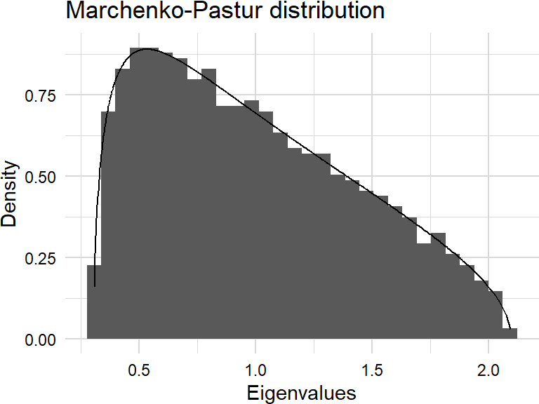
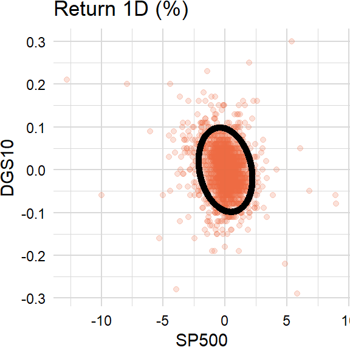
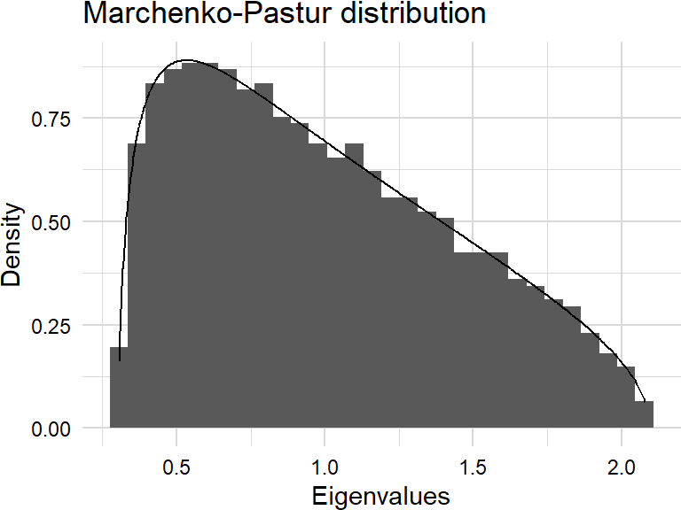
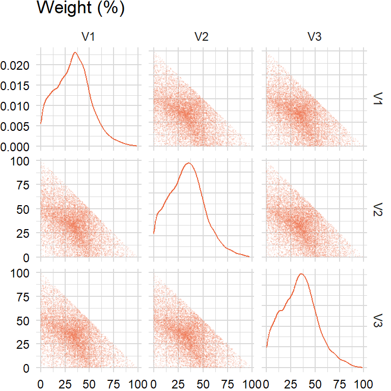
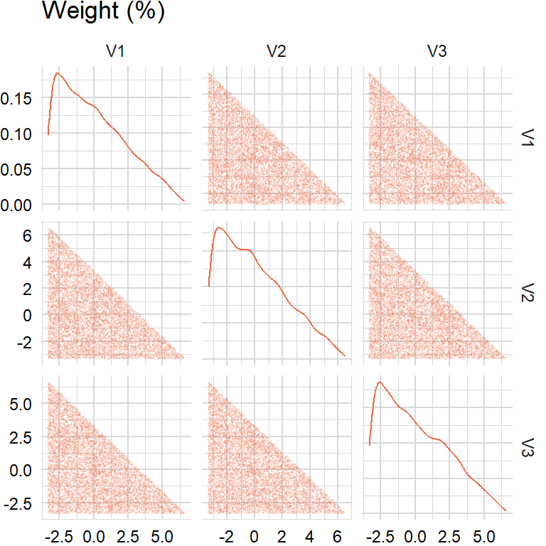
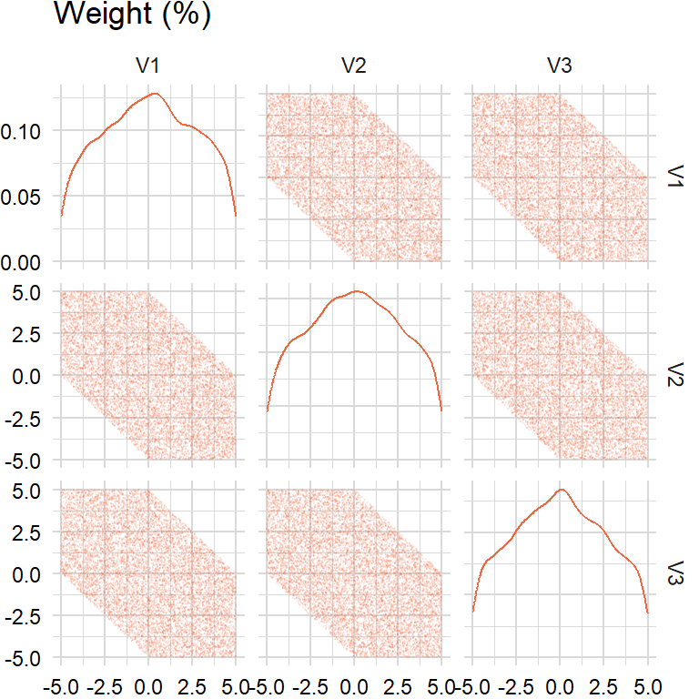

library(reticulate)
library(data.table)
source("../plot/theme_jjf.R")import pandas as pd
import numpy as np
import statsmodels.api as sm
import pandas_datareader as pdr
from scipy.stats import norm, chi2factors_r = ["SP500", "DTWEXAFEGS"] # "SP500" does not contain dividends; note: "DTWEXM" discontinued as of Jan 2020
factors_d = ["DGS10", "BAMLH0A0HYM2"]
factors = factors_r + factors_d
width = 252
scale = {"periods": 252, "overlap": 5}levels_df = pdr.get_data_fred(factors, start = "1900-01-01")returns_df = levels_df.apply(lambda x: np.log(x).diff() if x.name in factors_r else -x.diff() / 100)
overlap_df = returns_df.rolling(scale["overlap"], min_periods = 1).mean()
returns_df = pd.concat([returns_df, overlap_df], keys = ["returns", "overlap"], axis = 1)# import datetime
from scipy.optimize import minimizeimport ostickers = ["BAICX"] # fund inception date is "2011-11-28"
prices_df = pdr.get_data_tiingo(tickers, start = "1900-01-01", api_key = os.getenv("TIINGO_API_KEY"))C:\Users\jason\AppData\Local\R-MINI~1\envs\R-RETI~1\lib\site-packages\pandas_datareader\tiingo.py:234: FutureWarning: In a future version of pandas all arguments of concat except for the argument 'objs' will be keyword-only
return pd.concat(dfs, self._concat_axis)prices_df = prices_df.pivot_table(index = "date", columns = "symbol", values = "adjClose")
prices_df.index = prices_df.index.tz_localize(None)returns_cols = list(zip(["returns"], tickers))
overlap_cols = list(zip(["overlap"], tickers))
returns_df[returns_cols] = np.log(prices_df).diff()
returns_df[overlap_cols] = returns_df[returns_cols].rolling(scale["overlap"], min_periods = 1).mean()
returns_df.sort_index(axis = 1, inplace = True)Factor models
Ordinary least squares
Coefficients
\[ \begin{aligned} \hat{\beta}=(X^\mathrm{T}WX)^{-1}X^\mathrm{T}Wy \end{aligned} \]
# https://faculty.washington.edu/ezivot/research/factormodellecture_handout.pdf
def lm_coef(x, y, weights, intercept):
if (intercept): x = sm.add_constant(x)
result = np.matmul(np.linalg.inv(np.matmul(x.T, np.multiply(weights, x))),
np.matmul(x.T, np.multiply(weights, y)))
return np.ravel(result)intercept = True
# weights = np.matrix([0.9 ** i for i in range(width - 1, -1, -1)]).reshape((width, 1))
weights = np.matrix([1] * width).reshape((width, 1))overlap_x_df = returns_df.dropna()["overlap"][factors]
overlap_y_df = returns_df.dropna()["overlap"][tickers]
overlap_x_mat = np.matrix(overlap_x_df[-width:])
overlap_y_mat = np.matrix(overlap_y_df[-width:])lm_coef(overlap_x_mat, overlap_y_mat, weights, intercept)array([-1.11871891e-05, 1.99036614e-01, -1.38082089e-01, 2.57225254e+00,
1.69074657e+00])if (intercept): overlap_x_mat = sm.add_constant(overlap_x_mat)
fit = sm.WLS(overlap_y_mat, overlap_x_mat, weights = weights).fit()
if (intercept): overlap_x_mat = overlap_x_mat[:, 1:]
fit.paramsarray([-1.11871891e-05, 1.99036614e-01, -1.38082089e-01, 2.57225254e+00,
1.69074657e+00])R-squared
\[ \begin{aligned} R^{2}=\frac{\hat{\beta}^\mathrm{T}(X^\mathrm{T}WX)\hat{\beta}}{y^\mathrm{T}Wy} \end{aligned} \]
def lm_rsq(x, y, weights, intercept):
coef = np.matrix(lm_coef(x, y, weights, intercept))
if (intercept):
weights_ls = np.array(weights).reshape(-1).tolist()
x = sm.add_constant(x)
x = x - np.average(x, axis = 0, weights = weights_ls)
y = y - np.average(y, axis = 0, weights = weights_ls)
result = np.matmul(coef, np.matmul(np.matmul(x.T, np.multiply(weights, x)), coef.T)) / \
(np.matmul(y.T, np.multiply(weights, y)))
return result.item()lm_rsq(overlap_x_mat, overlap_y_mat, weights, intercept)0.8497723857546378fit.rsquared0.8497723857546384Standard errors
\[ \begin{aligned} \sigma_{\hat{\beta}}^{2}&=\sigma_{\varepsilon}^{2}(X^\mathrm{T}WX)^{-1}\\ &=\frac{(1-R^{2})}{n-p}(X^\mathrm{T}WX)^{-1}\\ &=\frac{SSE}{df_{E}}(X^\mathrm{T}WX)^{-1}\\ \sigma_{\hat{\alpha}}^{2}&=\sigma_{\varepsilon}^{2}\left(\frac{1}{n}+\mu^\mathrm{T}(X^\mathrm{T}WX)^{-1}\mu\right) \end{aligned} \]
# http://people.duke.edu/~rnau/mathreg.htm
def lm_se(x, y, weights, intercept):
n_rows = x.shape[0]
n_cols = x.shape[1]
rsq = lm_rsq(x, y, weights, intercept)
if (intercept):
weights_ls = np.array(weights).reshape(-1).tolist()
x = sm.add_constant(x)
y = y - np.average(y, axis = 0, weights = weights_ls)
df_resid = n_rows - n_cols - 1
else:
df_resid = n_rows - n_cols
var_y = np.matmul(y.T, np.multiply(weights, y))
var_resid = (1 - rsq) * var_y / df_resid
result = np.sqrt(var_resid * np.linalg.inv(np.matmul(x.T, np.multiply(weights, x))).diagonal())
return np.ravel(result)lm_se(overlap_x_mat, overlap_y_mat, weights, intercept)array([5.17600076e-05, 1.77837174e-02, 3.46178402e-02, 1.78768121e-01,
1.51361715e-01])fit.bsearray([5.17600076e-05, 1.77837174e-02, 3.46178402e-02, 1.78768121e-01,
1.51361715e-01])Standalone risk
\[ \begin{aligned} \text{SAR}_{k}&=\sqrt{w_{k}^{2}\sigma_{k}^{2}}\\ \text{SAR}_{\varepsilon}&=\sqrt{(1-R^{2})\sigma_{y}^{2}} \end{aligned} \]
def cov_wt(x, weights, center):
sum_w = sum(weights)
sumsq_w = sum(np.power(weights, 2))
if (center):
weights_ls = np.array(weights).reshape(-1).tolist()
x = x - np.average(x, axis = 0, weights = weights_ls)
result = np.matmul(x.T, np.multiply(weights, x)) / (sum_w - sumsq_w / sum_w)
return resultdef lm_sar(x, y, weights, intercept):
coef = lm_coef(x, y, weights, intercept)
rsq = lm_rsq(x, y, weights, intercept)
if (intercept): x = sm.add_constant(x)
# weights_ls = np.array(weights).reshape(-1)
# sigma = np.cov(np.concatenate((x, y), axis = 1).T,
# aweights = weights_ls)
sigma = cov_wt(np.concatenate((x, y), axis = 1), weights, intercept)
sar = np.multiply(np.power(coef, 2).T, sigma[:-1, :-1].diagonal())
sar_eps = (1 - rsq) * sigma[-1, -1]
result = np.sqrt(np.concatenate((np.matrix(sigma[-1, -1]),
np.matrix(sar),
np.matrix(sar_eps)), axis = 1))
return np.ravel(result)lm_sar(overlap_x_mat, overlap_y_mat, weights, intercept) * np.sqrt(scale["periods"]) * np.sqrt(scale["overlap"])array([0.07370702, 0. , 0.02986623, 0.00914208, 0.03164923,
0.02754505, 0.02856826])Risk contribution
\[ \begin{aligned} \text{MCR}&=w^\mathrm{T}\frac{\partial\sigma_{y}}{\partial w}\\ &=w^\mathrm{T}\frac{\Sigma w}{\sigma_{y}}\\ \text{MCR}_{\varepsilon}&=\sigma_{y}-\sum_{k=1}^{n}\text{MCR}_{k} \end{aligned} \]
# http://faculty.washington.edu/ezivot/research/factormodelrisklecture_handout.pdf
def lm_mcr(x, y, weights, intercept):
coef = np.matrix(lm_coef(x, y, weights, intercept)).T
rsq = lm_rsq(x, y, weights, intercept)
if (intercept): x = sm.add_constant(x)
# weights_ls = np.array(weights).reshape(-1)
# sigma = np.cov(np.concatenate((x, y), axis = 1).T,
# aweights = weights_ls)
sigma = cov_wt(np.concatenate((x, y), axis = 1), weights, intercept)
mcr = np.multiply(coef, np.matmul(sigma[:-1, :-1], coef)) / np.sqrt(sigma[-1, -1])
mcr_eps = np.sqrt(sigma[-1, -1]) - sum(mcr)
result = np.concatenate((np.sqrt(np.matrix(sigma[-1, -1])),
np.matrix(mcr).T,
np.matrix(mcr_eps)), axis = 1)
return np.ravel(result)lm_mcr(overlap_x_mat, overlap_y_mat, weights, intercept) * np.sqrt(scale["periods"]) * np.sqrt(scale["overlap"])array([ 0.07370702, -0. , 0.02368613, 0.00511232, 0.01746792,
0.01636783, 0.01107283])Implied shocks
\[ \begin{aligned} \hat{\beta}&=(Z^\mathrm{T}WZ)^{-1}Z^\mathrm{T}WX \end{aligned} \]
def implied_shocks(shocks, x, z, weights):
beta = np.matmul(np.linalg.inv(np.matrix(np.matmul(z.T, np.multiply(weights, z)))),
np.matrix(np.matmul(z.T, np.multiply(weights, x))))
result = np.matmul(shocks, beta)
return np.ravel(result)shocks = np.array([-0.1, 0.1])
overlap_z_mat = overlap_x_mat[:, [0, 1]]implied_shocks(shocks, overlap_x_mat, overlap_z_mat, weights)array([-0.1 , 0.1 , -0.0094656 , -0.00277652])Stress P&L
def pnl_stress(shocks, x, y, z, weights, intercept):
coef = lm_coef(x, y, weights, intercept)
if (intercept): x = sm.add_constant(x)
result = np.multiply(coef.T, implied_shocks(shocks, x, z, weights))
return np.ravel(result)pnl_stress(shocks, overlap_x_mat, overlap_y_mat, overlap_z_mat, weights, intercept)array([ 5.71524767e-05, -1.99036614e-02, -1.38082089e-02, -2.43479180e-02,
-4.69439434e-03])Principal component analysis
Underlying returns are structural bets that can be analyzed through dimension reduction techniques such as principal components analysis (PCA). Most empirical studies apply PCA to a covariance matrix (note: for multi-asset portfolios, use the correlation matrix because asset-class variances are on different scales) of equity returns (yield changes) and find that movements in the equity markets (yield curve) can be explained by a subset of principal components. For example, the yield curve can be decomposed in terms of shift, twist, and butterfly, respectively.
Eigendecomposition
\[ \begin{aligned} \boldsymbol{\Sigma}&=\lambda_{1}\mathbf{v}_{1}\mathbf{v}_{1}^\mathrm{T}+\lambda_{2}\mathbf{v}_{2}\mathbf{v}_{2}^\mathrm{T}+\cdots+\lambda_{k}\mathbf{v}_{k}\mathbf{v}_{k}^\mathrm{T}\\ &=V\Lambda V^{\mathrm{T}} \end{aligned} \]
# https://www.r-bloggers.com/fixing-non-positive-definite-correlation-matrices-using-r-2/
def eigen_decomp(x, comps):
L, V = np.linalg.eig(np.cov(x.T, ddof = 1))
idx = L.argsort()[::-1]
L = L[idx]
V = V[:, idx]
L = L[:comps]
V = V[:, :comps]
result = np.matmul(V, np.multiply(L, V.T))
return resultcomps = 1eigen_decomp(overlap_x_mat, comps) * scale["periods"] * scale["overlap"]array([[ 2.23562009e-02, -4.98318737e-03, 5.09362796e-04,
1.47970609e-03],
[-4.98318737e-03, 1.11075028e-03, -1.13536744e-04,
-3.29825838e-04],
[ 5.09362796e-04, -1.13536744e-04, 1.16053018e-05,
3.37135649e-05],
[ 1.47970609e-03, -3.29825838e-04, 3.37135649e-05,
9.79383806e-05]])# np.cov(overlap_x_mat.T) * scale["periods"] * scale["overlap"]Variance explained
We often look at the proportion of variance explained by the first \(i\) principal components as an indication of how many components are needed.
\[ \begin{aligned} \frac{\sum_{j=1}^{i}{\lambda_{j}}}{\sum_{j=1}^{k}{\lambda_{j}}} \end{aligned} \]
def variance_explained(x):
L, V = np.linalg.eig(np.cov(x.T, ddof = 1))
idx = L.argsort()[::-1]
L = L[idx]
result = L.cumsum() / L.sum()
return resultvariance_explained(overlap_x_mat)array([0.86308821, 0.990378 , 0.99663678, 1. ])Cosine similarity
Also, a challenge of rolling PCA is to try to match the eigenvectors: may need to change the sign and order.
\[ \begin{aligned} \text{similarity}=\frac{\mathbf{A}\cdot\mathbf{B}}{\|\mathbf{A}\|\|\mathbf{B}\|} \end{aligned} \]
def eigen_vals(x):
L, V = np.linalg.eig(np.cov(x.T, ddof = 1))
idx = L.argsort()[::-1]
L = L[idx]
return pd.DataFrame(L)
def eigen_vecs(x):
L, V = np.linalg.eig(np.cov(x.T, ddof = 1))
idx = L.argsort()[::-1]
V = V[:, idx]
return pd.DataFrame(V)def roll_eigen1(x, width, comp):
n_rows = len(x)
result = pd.DataFrame()
for i in range(width - 1, n_rows):
idx = range(max(i - width + 1, 0), i + 1)
evec = eigen_vecs(x.iloc[idx]).iloc[:, comp - 1]
result = result.append(evec.transpose())
result.index = x.index[(width - 1):]
result.columns = x.columns
return result comp = 1raw_df = roll_eigen1(overlap_x_df, width, comp)raw_mlt <- melt(as.data.table(py$raw_df, keep.rownames = "index"), id.vars = "index")
raw_mlt[ , index := as.Date(index)]
raw_plt <- plot_ts(raw_mlt, title = "Eigenvector 1Y")
print(raw_plt)
# https://quant.stackexchange.com/a/3095
def roll_eigen2(x, width, comp):
n_rows = len(x)
result = pd.DataFrame()
for i in range(width - 1, n_rows):
idx = range(max(i - width + 1, 0), i + 1)
evec = eigen_vecs(x.iloc[idx]).iloc[:, comp - 1]
if i > width - 1:
similarity = np.matmul(np.matrix(evec),
np.matrix(result.iloc[-1, :]).T)
evec = pd.DataFrame(np.multiply(np.sign(similarity), np.matrix(evec)))
result = result.append(evec)
else:
result = result.append(evec.transpose())
result.index = x.index[(width - 1):]
result.columns = x.columns
return result clean_df = roll_eigen2(overlap_x_df, width, comp)clean_mlt <- melt(as.data.table(py$clean_df, keep.rownames = "index"), id.vars = "index")
clean_mlt[ , index := as.Date(index)]
clean_plt <- plot_ts(clean_mlt, title = "Eigenvector 1Y")
print(clean_plt)
Contour ellipsoid
The contours of a multivariate normal (MVN) distribution are ellipsoids centered at the mean. The directions of the axes are given by the eigenvectors of the covariance matrix and squared lengths are given by the eigenvalues:
\[ \begin{aligned} ({\mathbf{x}}-{\boldsymbol{\mu}})^{\mathrm{T}}{\boldsymbol{\Sigma}}^{-1}({\mathbf{x}}-{\boldsymbol{\mu}})=c^{2} \end{aligned} \]
Or, in general parametric form:
\[ \begin{aligned} X(t)&=X_{c}+a\,\cos t\,\cos \varphi -b\,\sin t\,\sin \varphi\\ Y(t)&=Y_{c}+a\,\cos t\,\sin \varphi +b\,\sin t\,\cos \varphi \end{aligned} \] where \(t\) varies from \(0,\ldots,2\pi\). Here \((X_{c},Y_{c})\) is the center of the ellipse and \(\varphi\) is the angle between the x-axis and the major axis of the ellipse.
Specifically:
\[ \begin{aligned} &\text{Center: }\boldsymbol{\mu}=(X_{c},Y_{c})\\ &\text{Radius: }c^{2}= \chi_{\alpha}^{2}(df)\\ &\text{Length: }a=c\sqrt{\lambda_{k}}\\ &\text{Angle of rotation: }\varphi=\text{atan2}\left(\frac{V_{k}(2)}{V_{k}(1)}\right) \end{aligned} \]
# https://www.visiondummy.com/2014/04/draw-error-ellipse-representing-covariance-matrix/
# https://maitra.public.iastate.edu/stat501/lectures/MultivariateNormalDistribution-I.pdf
# https://en.wikipedia.org/wiki/Multivariate_normal_distribution
# https://en.wikipedia.org/wiki/Ellipse#General_parametric_form
def ellipse(n_sim, x, y, sigma):
data = np.concatenate((x, y), axis = 1)
L, V = np.linalg.eig(np.cov(data.T, ddof = 1))
idx = L.argsort()[::-1]
L = L[idx]
V = V[:, idx]
c = np.sqrt(chi2.ppf(norm.cdf(sigma), 2))
t = np.linspace(0, 2 * np.pi, n_sim)
phi = np.arctan2(V[1, 0], V[0, 0])
a = c * np.sqrt(L[0]) * np.cos(t)
b = c * np.sqrt(L[1]) * np.sin(t)
R = np.matrix([[np.cos(phi), np.sin(phi)], [-np.sin(phi), np.cos(phi)]])
r = np.matmul(np.matrix([a, b]).T, R)
result = np.add(r, np.mean(data, axis = 0)) # 2D only
return resultreturns_x_df = returns_df.dropna()["returns"][factors]
returns_x_mat = np.matrix(returns_x_df) # extended history
ellipse_x_mat = ellipse(1000, returns_x_mat[:, [0]], returns_x_mat[:, [2]], 1)ellipse_plt <- plot_scatter(data.table(py$returns_x_mat[ , c(1, 3)]), x = "V1", y = "V2",
title = "Return 1D (%)", xlab = "SP500", ylab = "DGS10") +
geom_point(data = data.table(py$ellipse_x_mat), aes(x = V1 * 100, y = V2 * 100))
print(ellipse_plt)
Principal component regression
Coefficients
\[ \begin{aligned} W_{k}&=\mathbf{X}V_{k}=[\mathbf{X}\mathbf{v}_{1},\ldots,\mathbf{X}\mathbf{v}_{k}]\\ {\widehat{\gamma}}_{k}&=\left(W_{k}^\mathrm{T}W_{k}\right)^{-1}W_{k}^\mathrm{T}\mathbf{Y}\\ {\widehat{\boldsymbol{\beta}}}_{k}&=V_{k}{\widehat{\gamma}}_{k} \end{aligned} \]
# https://en.wikipedia.org/wiki/Principal_component_regression
def pcr_coef(x, y, comps):
x = x - np.average(x, axis = 0)
L, V = np.linalg.eig(np.cov(x.T, ddof = 1))
idx = L.argsort()[::-1]
V = V[:, idx]
W = np.matmul(x, V)
gamma = np.matmul(np.linalg.inv(np.matmul(W.T, W)), np.matmul(W.T, y))
result = np.matmul(V[:, :comps], gamma[:comps])
return np.ravel(result)scale_x_mat = (overlap_x_mat - np.average(overlap_x_mat, axis = 0)) \
/ np.std(overlap_x_mat, axis = 0, ddof = 1)pcr_coef(scale_x_mat, overlap_y_mat, comps)array([ 0.00081854, -0.0007194 , 0.00053527, 0.00055451])pcr_coef(overlap_x_mat, overlap_y_mat, comps)array([ 0.37960728, -0.0846143 , 0.00864896, 0.02512534])R-squared
def pcr_rsq(x, y, comps):
coef = np.matrix(pcr_coef(x, y, comps))
x = x - np.average(x, axis = 0)
y = y - np.average(y, axis = 0)
result = np.matmul(coef, np.matmul(np.matmul(x.T, x), coef.T)) / (np.matmul(y.T, y))
return result.item()pcr_rsq(scale_x_mat, overlap_y_mat, comps)0.8073284709633463pcr_rsq(overlap_x_mat, overlap_y_mat, comps)0.6594954620620236Standard errors
\[ \begin{aligned} \text{Var}({\widehat{\boldsymbol{\beta}}}_{k})&=\sigma^{2}V_{k}(W_{k}^\mathrm{T}W_{k})^{-1}V_{k}^\mathrm{T}\\ &=\sigma^{2}V_{k}\text{diag}\left(\lambda_{1}^{-1},\ldots,\lambda_{k}^{-1}\right)V_{k}^\mathrm{T}\\ &=\sigma^{2}\sum_{j=1}^{k}{\frac{\mathbf{v}_{j}\mathbf{v}_{j}^\mathrm{T}}{\lambda_{j}}} \end{aligned} \]
# unable to verify the result
def pcr_se(x, y, comps):
n_rows = x.shape[0]
n_cols = x.shape[1]
rsq = pcr_rsq(x, y, comps)
y = y - np.average(y, axis = 0)
df_resid = n_rows - n_cols - 1
var_y = np.matmul(y.T, y)
var_resid = (1 - rsq) * var_y / df_resid
pca = sm.multivariate.PCA(x, standardize = False, demean = True)
L = pca.eigenvals[:comps]
V = pca.eigenvecs[:, :comps]
result = np.sqrt(var_resid * np.matmul(V, np.matmul(np.diag(1 / L), V.T)).diagonal())
return np.ravel(result)pcr_se(scale_x_mat, overlap_y_mat, comps)array([2.54433179e-05, 2.23618138e-05, 1.66383917e-05, 1.72362464e-05])pcr_se(overlap_x_mat, overlap_y_mat, comps)array([0.01735568, 0.00386857, 0.00039543, 0.00114873])Marchenko–Pastur distribution
Marchenko–Pastur distribution is the limiting distribution of eigenvalues of Wishart matrices as the matrix dimension \(m\) and degrees of freedom \(n\) both tend to infinity with ratio \(m/n\,\to \,\lambda\in(0,+\infty)\):
\[ \begin{aligned} d\nu(x)&={\frac {1}{2\pi\sigma ^{2}}}{\frac{\sqrt{(\lambda_{+}-x)(x-\lambda_{-})}}{\lambda x}}\,\mathbf{1}_{x\in[\lambda_{-},\lambda _{+}]}\,dx \end{aligned} \]
with
\[ \begin{aligned} \lambda_{\pm}&=\sigma^{2}(1\pm{\sqrt{\lambda }})^{2} \end{aligned} \]
# https://en.wikipedia.org/wiki/Marchenko%E2%80%93Pastur_distribution
# https://faculty.baruch.cuny.edu/jgatheral/RandomMatrixCovariance2008.pdf
def dmp(x, sigma = 1):
L, V = np.linalg.eig(np.cov(x.T, ddof = 1))
idx = L.argsort()[::-1]
L = L[idx]
lmbda = x.shape[1] / x.shape[0]
lower = sigma * (1 - np.sqrt(lmbda)) ** 2
upper = sigma * (1 + np.sqrt(lmbda)) ** 2
d = np.where((L <= lower) | (L >= upper), 0,
1 / (2 * np.pi * sigma * lmbda * L) * np.sqrt((upper - L) * (L - lower)))
return dn_sim = 5000
n_cols = 1000data_sim = np.random.normal(size = n_sim * n_cols).reshape((n_sim, n_cols))L, V = np.linalg.eig(np.cov(data_sim.T, ddof = 1))
idx = L.argsort()[::-1]
L = L[idx]dmp_df = pd.DataFrame.from_dict({"evals": L,
"dmp": dmp(data_sim)})dmp_plt <- plot_density(py$dmp_df, x = "evals", y = "dmp",
title = "Marchenko-Pastur distribution", xlab = "Eigenvalues", ylab = "Density")
print(dmp_plt)Warning: The dot-dot notation (`..density..`) was deprecated in ggplot2 3.4.0.
ℹ Please use `after_stat(density)` instead.
Random portfolios
Need to generate uniformly distributed weights \(\mathbf{w}=(w_{1},w_{2},\ldots,w_{N})\) such that \(\sum_{j=1}^{N}w_{i}=1\) and \(w_{i}\geq0\):
Approach 1: tempting to use \(w_{i}=\frac{u_{i}}{\sum_{j=1}^{N}u_{i}}\) where \(u_{i}\sim U(0,1)\) but the distribution of \(\mathbf{w}\) is not uniform
Approach 2: instead, generate \(\text{Exp}(1)\) and then normalize
Can also scale random weights by \(M\), e.g. if sum of weights must be 10% then multiply weights by 10%.
def rand_weights1(n_sim, n_assets, lmbda):
rand_exp = np.matrix(np.random.uniform(size = (n_sim, n_assets)))
rand_exp_sum = np.sum(rand_exp, axis = 1)
result = np.divide(rand_exp, rand_exp_sum)
return result# Methodology: uniform sampling from the simplex (http://mathoverflow.net/a/76258)
# z ~ U(0, 1) then -ln(z) is an exponential(1) distribution
# This is also known as generating a random vector from the symmetric Dirichlet distribution
def rand_weights2(n_sim, n_assets, lmbda):
rand_exp = np.matrix(-np.log(1 - np.random.uniform(size = (n_sim, n_assets))) / lmbda)
rand_exp_sum = np.sum(rand_exp, axis = 1)
result = np.divide(rand_exp, rand_exp_sum)
return result# 1. Generate n exponential(1) random variables x_1, x_2, ..., x_n
# 2. Let y_i = x_i / (sum_{i = 1}^{n} x_i)
def rand_weights3(n_sim, n_assets, lmbda):
rand_exp = np.matrix(np.random.exponential(size = (n_sim, n_assets)))
rand_exp_sum = np.sum(rand_exp, axis = 1)
result = np.divide(rand_exp, rand_exp_sum)
return resultlmbda = 1
n_assets = 3
n_sim = 10000approach1 = rand_weights1(n_sim, n_assets, lmbda)
approach2 = rand_weights2(n_sim, n_assets, lmbda)
approach3 = rand_weights3(n_sim, n_assets, lmbda)plot_pairs(as.data.table(py$approach1), title = "Weight (%)")
plot_pairs(as.data.table(py$approach2), title = "Weight (%)")plot_pairs(as.data.table(py$approach3), title = "Weight (%)")Random turnover
How to generate random weights between lower bound \(a\) and upper bound \(b\) that sum to zero?
Approach 1: tempting to multiply random weights by \(M\) and then subtract by \(\frac{M}{N}\) but the distribution is not between \(a\) and \(b\)
Approach 2: instead, use an iterative approach for random turnover:
- Generate \(N-1\) uniformly distributed weights between \(a\) and \(b\)
- For \(u_{N}\) compute sum of values and subtract from \(M\)
- If \(u_{N}\) is between \(a\) and \(b\), then keep; otherwise, discard
Then add random turnover to previous period’s random weights.
def rand_iterative(n_assets, lower, upper, target):
plug = False
while not plug:
result = np.random.uniform(low = lower, high = upper, size = n_assets - 1)
temp = target - sum(result)
if ((temp <= upper) and (temp >= lower)):
plug = True
result = np.append(result, temp)
return resultdef rand_turnover1(n_sim, n_assets, lower, upper, target):
rng = upper - lower
result = rand_weights3(n_sim, n_assets, lmbda) * rng
result = result - rng / n_assets
return resultdef rand_turnover2(n_sim, n_assets, lower, upper, target):
result = np.matrix(rand_iterative(n_assets, lower, upper, target))
while result.shape[0] < n_sim:
temp = np.matrix(rand_iterative(n_assets, lower, upper, target))
result = np.concatenate((result, temp), axis = 0)
return resultlower = -0.05
upper = 0.05
target = 0approach1 = rand_turnover1(n_sim, n_assets, lower, upper, target)
approach2 = rand_turnover2(n_sim, n_assets, lower, upper, target)plot_pairs(as.data.table(py$approach1), title = "Weight (%)")
plot_pairs(as.data.table(py$approach2), title = "Weight (%)")
Mean-variance
def geometric_mean(x, scale):
result = np.prod(1 + x) ** (scale / x.shape[1]) - 1
return resultmu = np.apply_along_axis(geometric_mean, 0, returns_x_mat, scale["periods"])
sigma = np.cov(overlap_x_mat.T, ddof = 1) * scale["periods"] * scale["overlap"]Maximum return
\[ \begin{aligned} \begin{array}{rrcl} \displaystyle\max_{x}&\mu^{T}\mathbf{w}\\ \textrm{s.t.}&\mathbf{w}^T\Sigma\mathbf{w}&\leq&\sigma^{2}\\ &e^T\mathbf{w}&=&1 \end{array} \end{aligned} \]
target = 0.06
start = np.array([1] * len(factors))
bnds = [(np.finfo(float).eps, 1) for i in range(len(factors))]
cons = [{"type": "ineq", "fun": lambda params, sigma, target: max_pnl_cons(params, sigma, target),
"args": (sigma, target)},
{"type": "eq", "fun": lambda params: np.sum(params) - 1}]def max_pnl_cons(params, sigma, target):
var = np.matmul(np.transpose(params), np.matmul(sigma, params))
result = target ** 2 - var
return result
def max_pnl_obj(params, mu):
result = np.matmul(mu, params)
return -result
def max_pnl_optim(params, mu):
result = minimize(max_pnl_obj, params, args = (mu), bounds = bnds, constraints = cons)
return result.xparams1 = max_pnl_optim(start, mu)
params1array([4.37539218e-01, 5.62460782e-01, 2.22044605e-16, 2.22044605e-16])np.matmul(mu, params1)0.04133894521237629np.sqrt(np.matmul(np.transpose(params1), np.matmul(sigma, params1)))0.06000006431558848Minimum variance
\[ \begin{aligned} \begin{array}{rrcl} \displaystyle\min_{x}&\mathbf{w}^T\Sigma\mathbf{w}\\ \textrm{s.t.}&\mu^{T}\mathbf{w}&\geq&M\\ &e^T\mathbf{w}&=&1 \end{array} \end{aligned} \]
target = 0.03
start = np.array([1] * len(factors))
cons = [{"type": "ineq", "fun": lambda params, mu, target: min_risk_cons(params, mu, target),
"args": (mu, target)},
{"type": "eq", "fun": lambda params: np.sum(params) - 1}]def min_risk_cons(params, mu, target):
result = np.matmul(mu, params) - target
return result
def min_risk_obj(params, sigma):
result = np.matmul(np.transpose(params), np.matmul(sigma, params))
return result
def min_risk_optim(params, sigma):
result = minimize(min_risk_obj, params, args = (sigma), bounds = bnds, constraints = cons)
return result.xparams2 = min_risk_optim(start, sigma)
params2array([0.28582197, 0.54910829, 0.10805544, 0.0570143 ])np.matmul(mu, params2)0.030000000029763933np.sqrt(np.matmul(np.transpose(params2), np.matmul(sigma, params2))) 0.04296084289445136Maximum ratio
\[ \begin{aligned} \begin{array}{rrcl} \displaystyle\max_{x}&\mu^{T}\mathbf{w}-\frac{1}{2}\delta(\mathbf{w}^T\Sigma\mathbf{w})\\ \textrm{s.t.}&e^T\mathbf{w}&=&1 \end{array} \end{aligned} \]
ir = 0.5
target = ir / 0.06 # ir / std (see Black-Litterman)
start = np.array([1] * len(factors))
cons = [{"type": "eq", "fun": lambda params: np.sum(params) - 1}]print(start)[1 1 1 1]print(start.shape)(4,)print(mu)[ 0.07274677 0.01690674 -0.00105489 0.00066174]print(mu.shape)(4,)print(sigma)[[ 2.25161872e-02 -4.26101245e-03 4.41178041e-04 1.51807793e-03]
[-4.26101245e-03 4.38344152e-03 -4.21280590e-04 -1.13499562e-04]
[ 4.41178041e-04 -4.21280590e-04 1.51390635e-04 -2.06179097e-05]
[ 1.51807793e-03 -1.13499562e-04 -2.06179097e-05 2.65417825e-04]]print(sigma.shape)(4, 4)print(np.matmul(np.transpose(start), np.matmul(sigma, start)))0.021602128071028265def max_ratio_obj(params, mu, sigma, target):
result = np.matmul(mu, params) - 0.5 * target * (np.matmul(np.transpose(params),
np.matmul(sigma, params)))
# result = np.matmul(mu, params) / np.sqrt(np.matmul(np.transpose(params), np.matmul(sigma, params)))
return -result
def max_ratio_optim(params, mu, sigma, target):
result = minimize(max_ratio_obj, params, args = (mu, sigma, target), bounds = bnds,
constraints = cons)
return result.xparams3 = max_ratio_optim(start, mu, sigma, target)
params3array([4.34472214e-01, 5.65527786e-01, 2.22044605e-16, 3.04010289e-16])np.matmul(mu, params3)0.04116768362937637np.sqrt(np.matmul(np.transpose(params3), np.matmul(sigma, params3)))0.05965147931510853Black-Litterman
Prior distribution
\[ \begin{aligned} \text{Risk aversion: } &\lambda=\frac{E(r)-r_{f}}{\sigma^{2}}=\frac{IR}{\sigma}\\ \text{Implied returns: } &\Pi=\lambda\Sigma w\\ \text{Distribution: } &N\sim(\Pi,\tau\Sigma) \end{aligned} \]
def implied_pnl(params, ir, sigma):
lmbda = ir / np.sqrt(np.matmul(np.transpose(params), np.matmul(sigma, params)))
result = np.matmul(lmbda * sigma, params)
return resultimplied_pnl(params3, ir, sigma)array([ 0.06180012, 0.00526111, -0.00039032, 0.00499045])Conditional distribution
\[ \begin{aligned} \text{Prior mean variance: } &\tau\in(0.01, 0.05)\approx(0.025)\\ \text{Asset views: } &\mathbf{P}={\begin{bmatrix} p_{11}&\cdots&p_{1n}\\ \vdots&\ddots&\vdots\\ p_{k1}&\cdots&p_{kn} \end{bmatrix}}= {\begin{bmatrix} 0&0&0&0&0&0&1&0\\ -1&1&0&0&0&0&0&0\\ 0&0&0.5&-0.5&0.5&-0.5&0&0 \end{bmatrix}}\\ \text{View returns: } &\mathbf{Q}={\begin{bmatrix} q_{1}\\ \vdots\\ q_{k} \end{bmatrix}}= {\begin{bmatrix} 0.0525\\ 0.0025\\ 0.0200 \end{bmatrix}}\\ \text{View confidence: } &\mathbf{C}={\begin{bmatrix} c_{1}\\ \vdots\\ c_{k} \end{bmatrix}}= {\begin{bmatrix} 0.2500\\ 0.5000\\ 0.6500 \end{bmatrix}}\\ \text{View covariance: } &\mathbf{\Omega}={\begin{bmatrix} \tau\left(\frac{1-c_{1}}{c_{1}}\right)\left(p_{1}\Sigma p_{1}^{T}\right)&0&0\\ 0&\ddots&0\\ 0&0&\tau\left(\frac{1-c_{k}}{c_{k}}\right)\left(p_{k}\Sigma p_{k}^{T}\right) \end{bmatrix}}\\ \text{Distribution: } &N\sim(\mathbf{Q}, \mathbf{\Omega}) \end{aligned} \]
Posterior distribution
\[ \begin{aligned} \text{Implied returns: } &\hat{\Pi}=\Pi+\tau\Sigma \mathbf{P}^{T}\left(\tau \mathbf{P}\Sigma \mathbf{P}^{T}+\mathbf{\Omega}\right)^{-1}\left(\mathbf{Q}-\mathbf{P}\Pi^{T}\right)\\ \text{Covariance: } &\hat{\Sigma}=\Sigma+\tau\left[\Sigma-\Sigma\mathbf{P}^{T}\left(\tau\mathbf{P}\Sigma\mathbf{P}^{T}+\mathbf{\Omega}\right)^{-1}\tau\mathbf{P}\Sigma\right]\\ \text{Weights: } &\hat{w}=\hat{\Pi}\left(\lambda\Sigma\right)^{-1}\\ \text{Distribution: } &N\sim\left(\left[\left(\tau\Sigma\right)^{-1}+\mathbf{P}^{T}\Omega^{-1}\mathbf{P}\right]^{-1}\left[\left(\tau\Sigma\right)^{-1}\Pi+\mathbf{P}^{T}\Omega^{-1}\mathbf{Q}\right],\left[\left(\tau\Sigma\right)^{-1}+\mathbf{P}^{T}\Omega^{-1}\mathbf{P}\right]^{-1}\right) \end{aligned} \]
def black_litterman(params, ir, sigma, views):
# prior distribution
weights_prior = params
sigma_prior = sigma
lmbda = ir / np.sqrt(np.matmul(np.transpose(weights_prior), np.matmul(sigma_prior, weights_prior)))
pi_prior = np.transpose(np.matrix(np.matmul(lmbda * sigma_prior, weights_prior)))
# matrix calculations
matmul_left = np.multiply(views["tau"], np.matmul(sigma_prior, views["P"].T))
matmul_mid = np.multiply(views["tau"], np.matmul(views["P"], np.matmul(sigma_prior, views["P"].T)))
matmul_right = views["Q"] - np.matmul(views["P"], pi_prior)
# conditional distribution
omega = np.diag(np.diag(np.matmul(np.diag([(1 - x) / x for x in views["C"]]), matmul_mid)))
# posterior distribution
pi_posterior = pi_prior + np.matmul(matmul_left, np.matmul(np.linalg.inv(matmul_mid + omega), matmul_right))
sigma_posterior = sigma_prior + np.multiply(views["tau"], sigma_prior) - \
np.matmul(matmul_left, np.matmul(np.linalg.inv(matmul_mid + omega),
np.multiply(views["tau"], np.matmul(views["P"], sigma_prior))))
weights_posterior = np.matmul(pi_posterior.T, np.linalg.inv(lmbda * sigma_prior))
# implied confidence
pi_posterior_100 = pi_prior + np.matmul(matmul_left, np.matmul(np.linalg.inv(matmul_mid), matmul_right))
weights_posterior_100 = np.matmul(pi_posterior_100.T, np.linalg.inv(lmbda * sigma_prior))
implied_confidence = (weights_posterior - weights_prior) / (weights_posterior_100 - weights_prior)
result = {"implied_confidence": implied_confidence,
"weights_prior": np.matrix(weights_prior),
"weights_posterior": weights_posterior,
"pi_prior": np.transpose(pi_prior),
"pi_posterior": np.transpose(pi_posterior),
"sigma_prior": sigma_prior,
"sigma_posterior": sigma_posterior}
return resulttau = 0.025
P = np.diag([1] * len(factors))
Q = np.transpose(np.matrix(implied_shocks([0.1], overlap_x_mat, overlap_x_mat[:, 0], 1)))
C = [0.95] * len(factors)
views = {"tau": tau, "P": P, "Q": Q, "C": C}bl = black_litterman(params3, ir, sigma, views)
bl{'implied_confidence': matrix([[ 0.97159292, 0.93400713, -0.37067746, -0.40614919]]), 'weights_prior': matrix([[4.34472214e-01, 5.65527786e-01, 2.22044605e-16, 3.04010289e-16]]), 'weights_posterior': matrix([[0.52802075, 0.02381873, 0.03199844, 0.01172265]]), 'pi_prior': matrix([[ 0.06180012, 0.00526111, -0.00039032, 0.00499045]]), 'pi_posterior': matrix([[ 0.09907076, -0.01810773, 0.00190707, 0.00671672]]), 'sigma_prior': array([[ 2.25161872e-02, -4.26101245e-03, 4.41178041e-04,
1.51807793e-03],
[-4.26101245e-03, 4.38344152e-03, -4.21280590e-04,
-1.13499562e-04],
[ 4.41178041e-04, -4.21280590e-04, 1.51390635e-04,
-2.06179097e-05],
[ 1.51807793e-03, -1.13499562e-04, -2.06179097e-05,
2.65417825e-04]]), 'sigma_posterior': array([[ 2.25429284e-02, -4.26136589e-03, 4.41212808e-04,
1.51825854e-03],
[-4.26136589e-03, 4.38877437e-03, -4.21313142e-04,
-1.13491831e-04],
[ 4.41212808e-04, -4.21313142e-04, 1.51575898e-04,
-2.06227402e-05],
[ 1.51825854e-03, -1.13491831e-04, -2.06227402e-05,
2.65737594e-04]])}params4 = np.array(bl["weights_posterior"])[0]
params4 = params4 / sum(params4) # no leverage
params4array([0.88659454, 0.0399938 , 0.05372827, 0.01968339])np.matmul(mu, params4)0.06512940361138682np.sqrt(np.matmul(np.transpose(params4), np.matmul(sigma, params4)))0.13227699668169068Risk parity
Risk parity is an approach to portfolio management that focuses on allocation of risk rather than allocation of capital. In a risk parity strategy, the asset allocations are leveraged, or deleveraged, to have equal risk contributions. Suppose that \(\mathbf{R}\) is a \(T \times N\) matrix of asset returns where the return of the \(i^{th}\) asset is \(R_{i,t}\) at time \(t\). Define \(\Sigma\) to be the covariance matrix of \(\mathbf{R}\) and let \(\mathbf{w}=(w_{1},\dots,w_{N})\) be a vector of asset weights. Then the volatility of the return of the strategy is \(\sigma_{P}=\sqrt{\mathbf{w}^T\Sigma\mathbf{w}}\) and, by Euler’s Theorem, satisfies:
\[ \begin{aligned} \sigma_{P}&=\sum_{i=1}^{N}w_{i}\frac{\partial\sigma_{P}}{\partial w_{i}}\\ &=w_{1}\frac{\partial\sigma_{P}}{\partial w_{1}}+\dots+w_{N}\frac{\partial\sigma_{P}}{\partial w_{N}} \end{aligned} \]
where each element is the risk contribution of the \(i^{th}\) risky asset. The risk parity objective solves for weights such that each asset contributes equal risk using the following nonlinear constrained optimization problem:
\[ \begin{aligned} \begin{array}{rrcl} \displaystyle\max_{x}&\displaystyle\sum_{i=1}^{N}\log(w_{i})\\ \textrm{s.t.}&\sqrt{\mathbf{w}^T\Sigma\mathbf{w}}&\leq&\sigma \end{array} \end{aligned} \]
To incorporate these conditions into one equation, introduce a new variable \(\lambda\) that is the Lagrange multiplier and define a new function \(\mathcal{L}\) as follows:
\[ \begin{aligned} \mathcal{L}(\mathbf{w},\lambda)&=\sum_{i=1}^{N}\log(w_{i})-\lambda(\sqrt{\mathbf{w}^T\Sigma\mathbf{w}}-\sigma) \end{aligned} \]
Then set the partial derivatives of \(\mathcal{L}\) equal to zero for each asset \(i\):
\[ \begin{aligned} \frac{\partial\mathcal{L}(\mathbf{w},\lambda)}{\partial w_{i}}&=\frac{1}{w_{i}}-\lambda\frac{\partial\sigma_{P}}{\partial w_{i}}=0 \Leftrightarrow w_{i}\frac{\partial\sigma_{P}}{\partial w_{i}}=\frac{1}{\lambda} \end{aligned} \]
Notice that \(1/\lambda\) is the risk contribution of the \(i^{th}\) asset. Now use Python to maximize the Lagrangian numerically:
# http://faculty.washington.edu/ezivot/econ424/riskbudgetingslides.pdf
# https://systematicinvestor.wordpress.com/2011/11/16/black-litterman-model/
# https://cran.r-project.org/web/packages/BLCOP/vignettes/BLCOP.pdf
# http://math.stackexchange.com/questions/17776/inverse-of-the-sum-of-matrices
def risk_parity_obj(params, sigma, target):
risk = np.sqrt(np.matmul(np.transpose(params), np.matmul(sigma, params)))
risk_contrib = target / len(params)
result = -(sum(np.log(params)) - (1 / risk_contrib) * (risk - target))
return result
def risk_parity_optim(params, sigma, target):
result = minimize(risk_parity_obj, params, args = (sigma, target)).x
result = result / sum(result) # no leverage
return resulttarget = 1
start = np.array([1] * len(factors))params5 = risk_parity_optim(start, sigma, target)
params5array([0.03001117, 0.13139588, 0.57725273, 0.26134022])risk = np.sqrt(np.matmul(np.transpose(params5), np.matmul(sigma, params5)))
risk_contrib = np.multiply(params5, np.matmul(sigma, params5)) / risk
risk_contribarray([0.00239932, 0.00239926, 0.00239922, 0.0023993 ])np.matmul(mu, params5)0.003968692809216631np.sqrt(np.matmul(np.transpose(params5), np.matmul(sigma, params5))) 0.009597094428203801pd.DataFrame.from_dict({"max_pnl": params1,
"min_risk": params2,
"max_ratio": params3,
"black_litterman": params4,
"risk_parity": params5}) max_pnl min_risk max_ratio black_litterman risk_parity
0 4.375392e-01 0.285822 4.344722e-01 0.886595 0.030011
1 5.624608e-01 0.549108 5.655278e-01 0.039994 0.131396
2 2.220446e-16 0.108055 2.220446e-16 0.053728 0.577253
3 2.220446e-16 0.057014 3.040103e-16 0.019683 0.261340Portfolio attribution
Single-period
The arithmetic active return is commonly decomposed using the Brinson-Fachler method:
\[ \begin{aligned} \text{Allocation: } &r_{a}=\sum_{k=1}^{n}(w_{p,k}-w_{b,k})(r_{b,k}-r_{b})\\ \text{Selection: } &r_{s}=\sum_{k=1}^{n}w_{p,k}(r_{p,k}-r_{b,k})\\ \end{aligned} \]
where \(k=1,\ldots,n\) is each sector or factor.
Multi-period
Arithmetic attributes add to the active return of a single period; however, they cannot be summed or compounded to explain the active return over multiple periods. To solve this problem, the original arithmetic attribute is multiplied by a single scaling coefficient for that period. After all single-period original attributes have been transformed, the adjusted attributes sum to the active return over the periods.
\[ \begin{aligned} \text{Carino scaling coefficient: } &c_{t}=\frac{[\ln(1+r_{p,t})-\ln(1+r_{b,t})]/(r_{p,t}-r_{b,t})}{[\ln(1+r_{p})-\ln(1+r_{b})]/(r_{p}-r_{b})} \end{aligned} \]
where \(t=1,\ldots,n\) is each period.
# http://www.frongello.com/support/Works/Chap20RiskBook.pdf
# https://github.com/R-Finance/PortfolioAttribution/blob/master/R/Carino.R
def pnl_attrib(params, x):
total_i = np.sum(x, axis = 1)
total = np.prod(1 + total_i) - 1
coef = (np.log(1 + total_i) / total_i) / (np.log(1 + total) / total)
result = np.sum(np.multiply(x, coef), axis = 0)
return np.ravel(result)attrib_mat = np.multiply(params4, np.matrix(returns_x_df)[-width:])pnl_attrib(params4, attrib_mat)array([ 2.05769409e-01, -3.05548073e-03, -9.99306361e-05, 2.08244498e-04])